My research interests lie at the intersection of artificial intelligence and robotics.
Long term goal: developing a generic, hardware-independent algorithm, which would perform automatic system identification and self-supervised task learning.
In the meantime: focusing on uncertainty-based efficient exploration approaches for supervised and reinforcement learning methods, applied to robotic task learning.
I obtained my BSc degree in Mechatronics Robotics and Automation, at the Faculty of Technical Sciences, University of Novi Sad in 2011. Afterwards, I completed the double-degree EMARO (European Masters on Advanced Robotics) program and was awarded the MSc degree in 2013.
During 2013-2014, I worked as a research engineer in RIS group, LAAS-CNRS Toulouse on rover locomotion diagnostics using sequential machine learning models.
In 2015-2016, I was as a research assistant in the iBug group, Dept. of Computing, Imperial College London. There I worked on applying deep learning methods for human emotion recognition based on multimodal data, i.e. facial expressions and speech.
Portfolio
Publications
2017
Efficient Robot Task Learning and Transfer via Informed Search in Movement Parameter Space
N. Rakicevic and P. Kormushev. Workshop on Acting and Interacting in the Real World: Challenges in Robot Learning (AIRW), (NIPS'17)
@inproceedings{Rakicevic2017,
author = {N. Rakicevic and P. Kormushev},
booktitle = {Workshop on Acting and Interacting in the Real World: Challenges in Robot Learning, 31st Conference on Neural Information Processing Systems},
title = {Efficient Robot Task Learning and Transfer via Informed Search in Movement Parameter Space},
year = {2017},}
2016
Multi-modal Neural Conditional Ordinal Random Fields for Agreement Level Estimation
N. Rakicevic, O. Rudovic, S. Petridis and M. Pantic. International Conference on Pattern Recognition (ICPR’16)
@inproceedings{Rakicevic2016,
author = {N. Rakicevic and O. Rudovic and S. Petridis and M. Pantic},
address = {Cancun, Mexico},
booktitle = {International Conference on Pattern Recognition (ICPR’16)},
month = {December},
title = {Multi-Modal Neural Conditional Ordinal Random Fields for Agreement Level Estimation},
year = {2016},}
2015
Neural Conditional Ordinal Random Fields for Agreement Level Estimation
N. Rakicevic, O. Rudovic, S. Petridis and M. Pantic. 1st International Workshop on Automatic Sentiment Analysis in the Wild (WASA’15), ACII'15
@inproceedings{Rakicevic2015,
author = {N. Rakicevic and O. Rudovic and S. Petridis and M. Pantic},
address = {Xi'an, China},
booktitle = {1st International Workshop on Automatic Sentiment Analysis in the Wild (WASA’15)},
month = {September},
title = {Neural Conditional Ordinal Random Fields for Agreement Level Estimation},
year = {2015},}
During my time in the intelligent behaviour understanding group (iBug) I have extended the sequential methods I started working on in LAAS (Conditional Random Fields) and applied them to human sentiment analysis based on facial expressions.
More specifically, I have concentrated on inter-personal (dis)agreement intensity analysis, based on visual and audio inputs.
Moreover, I obtained experience as a teaching assistant in the Machine Learning course (C395).
My work was financed from the SEWA project whose goal is to exploit the state of the art machine learning approaches to the analysis of facial, vocal and verbal behaviour, which can be combined and applied to realise more natural human-computer interaction.
The first publication I made [Rakicevic et al. 2015] proposes a novel approach to automatic estimation of (dis)agreement intensity levels a person expresses during a dyadic conversation.
The data used in for this purpose was obtained from the MAHNOB-Mimicry database [Sun et al 2011]. From this database, I used 34, 15min long, video recorded sessions of 38 different participants discussing various topics (money, television, books, smoking etc.). The recording setup is shown in the upper figure on the right. The videos have a frame rate of 58 frames per second. For the first model, only 5 subjects were used.
The input features used are the tracked facial points’ positions (49 points)
obtained using the face tracker from [Ashtana et al. 2014]
The (dis)agreement intensity labels were defined according
to the Likert ordinal scale [Likert 1932] in the range:
2 : Strong Disagreement
-1 : Disagreement
0 : Neutral level
+1 : Agreement
+2 : Strong Agreement
The annotation was performed per-frame by an expert annotator.
The final distribution of the intensity levels is shown in the lower figure.
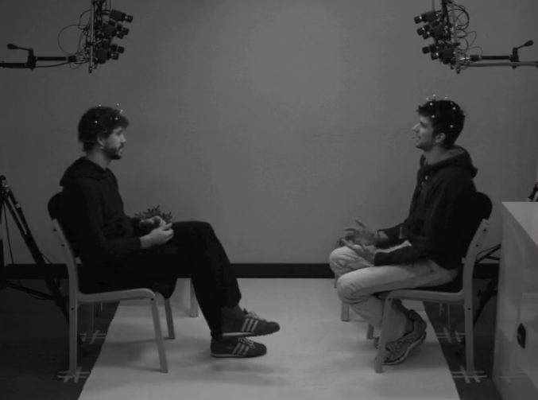
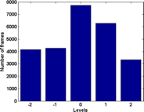
After appropriate feature pre-processing (alignment and normalisation), down-sampling and segmentation, 329 sequences were obtained, on average 80 frames long. 5 fold subject-independent cross validation of the compared models.
The model we proposed, Neural Conditional Ordinal Random Field model, performs non-linear feature extraction from face images using the notion of Neural Networks (NN), while also modelling temporal and ordinal relationships between the agreement levels by means of a Conditional Ordinal Random Field (CORF) model [Kim and Pavlovic 2010]. The model structure is presented in the figure below.
The model’s performance was compared with static (NN and Support Vector Machines) and sequential (CRF) baseline, as well as state of the art models (CORF and Kernel CORF). Moreover, we cross-validated the architecture of the NN part and the best results are obtained for 10 hidden nodes.
We show in our experiments that the proposed approach outperforms existing methods for modelling of sequential data. The measures used were the F1 score, Mean Absolute Error (MAE) and Intra-Class Correlation Coefficient (ICC).
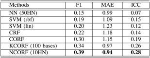
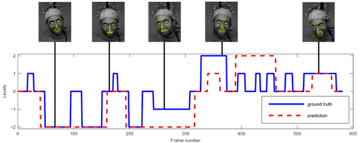
MULTIMODAL EXTENSION
The multimodal extensions employs facial features, as previously, and also audio features, extracted from the person in focus’ active speech segments. The 130 audio features used are the 65 described in [Schuller et al. 2013] and their derivatives. The extraction was done using the OpenSMILE software [Eyben et al. 2013].
The second contribution is the 2-phase joint decoupled optimisation of the NN and CORF parameters. This decoupled approach is proposed to avoid the slow learning which occurs when all the parameters are optimised together.
Moreover, in this work, all 38 participants were included.
The proposed model diagram is presented in the figure above. This is still work in progress.
Further extensions would include employing CNNs to raw pixel inputs instead of tracked point positions.
The work done here was a preliminary analysis of rover locomotion and diagnostics for various terrain types (grass, rocks, asphalt) and different locomotion classes (nominal, rough, failure). This was a preparatory study supposed to be further extended into a PhD thesis “Agile Locomotion for a Planetary Rover”, in collaboration with Astrium Astrium and ESA. Unfortunately, Astrium went under restructuring and was unable to finance it.
The motivation lies in the fact that the chassis of planetary rovers is conceived to endow them with high locomotion capabilities, however the classical navigation loops considered for now (and in the near future, e.g. for the Exomars rover) are defined so that even small obstacles must be circumnavigated. There is however a big interest in empowering such rovers with obstacle-crossing capabilities, from an operational point of view on the one hand, but also from the scientific point (collecting more interesting samples) on the other hand, as this remains an open challenging problem.
Planetary exploration is just an example application, the work would also pertain to any robot with advanced locomotion capabilities, such as in search and rescue applications for instance.
CHALLENGES
Such a locomotion ability would require a thorough re-visit of the navigation loop, with a very strong focus on locomotion control: when trying to climb a pile of rocks for instance, the 3D model built is of little help as many areas remain occluded (due to the terrain geometry and the angle from which range data is acquired), and also because when driving on such areas, the ground below the wheels is "moving“ (rocks are rolling, wheels are slipping, etc.)
One of the most difficult issues is that the knowledge of the wheel/soil interactions is very poor. Hence, a challenge is to derive such knowledge as much as possible from all the parameters that can be sensed on-board the rover (from wheel current consumption to overall position and speed, via all the encoders information, terrain analysis or even sound).
A “diagnosis” capability is also a part of the problem. A “classic” example is when the Opportunity rover got stuck in a loose sand dune, back in April 2005, it took 5 weeks for NASA engineers to free the rover. There were many options to detect and prevent this (e.g. wheel slippage detection, even without comparison with visual odometry), the problem was that the loose sand had no visual print, and at that time they had already traversed a few kilometers on this monotonic environment, looking forward to reach Victoria crater.. This actually pertains more to locomotion diagnostic (or monitoring), but still is something which is part of "agile locomotion".
Work done at LAAS consisted of gathering and analysing the data using the “Mana” rover
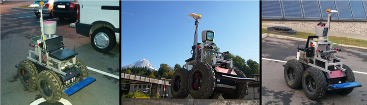
Inputs from sensors gathered
Velocity, torque, IMU...
Labeling by expert annotator
3 classes (normal, rough and fault locomotion)
Machine Learning modelling methods explored
Conditional Random Fields (CRF), Hidden Markov Models (HMM), Naive Bayes…
Due to the limited amount of time, the analysis of results was not completed. However, based on the obtained feature-label distributions the problem seems to be complex, but interesting for further examination.
Label distribution in the space of front - back wheel velocity and torque difference:
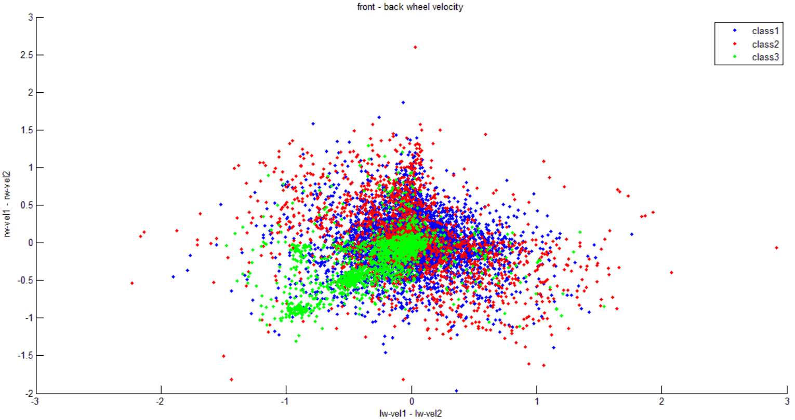
Label distribution in the space of left – right wheel velocity and torque difference:
For my master thesis, I have developed, implemented and performed experimental tests on the physical rover, for a fuzzy logic based navigation and terrain mapping algorithm.
The rover used to test the code was Japan Aerospace Exploration Agency’s (JAXA) test bed rover “Cuatro”. The 2 test sessions were done at the Institute of Space and Aeronautical Science (ISAS) rover laboratory, thanks to the help of prof Genya Ishigami.
The algorithm performed good during the practical tests and I have defended my MSc thesis with the highest grade.
PROBLEM STATEMENT AND OBJECTIVE
Problem to be solved
To deal with obstacles which are not considered during global path planning due to the dead area of external sensors and occlusions.
Mapping the explored environment.
Objective
To propose an efficient re-planning method considering sub-goals of the global path (their direction) and the spatial terrain properties (the state of the ground, the height and the distance from the untraversable obstacles and also the terrain roughness), in order to deal with the above problems.
Proposed Method:
Global map generation from local views and position information.
Fuzzy Controller based navigation based on local views.
Verification Tests on the “Cuatro” rover:
Weight: 35kg
4 wheel drive
4 wheel steering
SwissRanger™ SR4000 TOF camera
Rocker suspension + independent shock absorbers
PROPOSED METHOD OVERVIEW
The diagram of the proposed algorithm shows the process from obtaining the short range image, through its integration in the global map (based on the robots position and attitude), up to the derivation and execution of the control variables (speed and direction) by the system.
INPUTS: roll, pitch, yaw angles; global x, y coordinates; short range camera image
OUTPUTS: control variables for motion execution (desired speed and orientation)
MAPPING
The mapping was done by taking as input the short range camera image, applying necessary transformations to compensate for the robots pose, and then integrating it in the global map. This approach considers terrain roughness and not just a simple discrimination to traversable and untraversable obstacles.
Care has been taken to appropriately weigh the old and new information when combining with the existing map data.
The figure shows how the new transformed map patch is aligned and added to the global map.
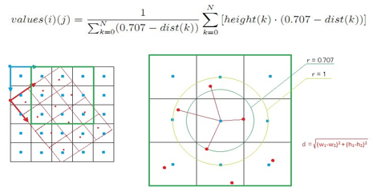
FUZZY CONTROLLER
The figure shows how the control output is derived
based on the transformed short range input image.
OBSTACLE membership function is formed based on the distance of the untraversable obstacles
GOAL membership function is a simple triangular function with its peak at the direction of the goal.
The above two are combined to get the final output control variables – speed coefficient and heading direction.
TESTING ON “CUATRO”: TEST 1 – follow sub-goals and avoid obstacle
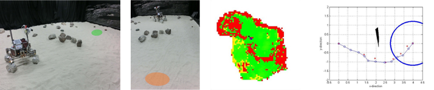
TESTING ON “CUATRO”: TEST 2 – manage the occluded terrain
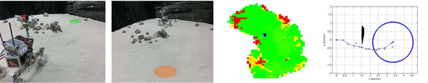
For this project I was a part of a team of 5 people (Luca Buoncompagni, Raffaello Camoriano, Thomas Genevois and Gamal El Ghazaly). The purpose was to create and autonomous undewater vehicle (AUV) to compete at the 2012 NURC SAUC-E competition.
My main responsibilities were the development and implementation, connection and testing of all electronic components, including: power convertors, sensor data A/D conversion, actuators’ drivers integration and wiring. The main challenge was to optimally organise and connect all component in a confined waterproof space.
Besides this, I collaborated with Thomas on the mechanical design and assembly of the overall structure.
THE ROBOT: CRISTOFORO
Initial CAD model with main components:
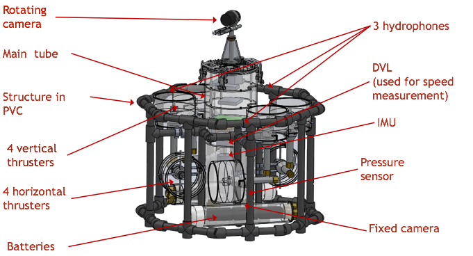
COMPONENTS
The components used in the AUV which needed to be organised:
Sensors (Doppler Velocity Log (DVL), Inertial Measurement Unit (IMU), hydrophones, top camera , webcam)
Actuators (stepper motor and its controller, thruster motors and their drivers)
Computation (PC104 and peripherals, Arduino)
Connectors
Waterproof connectors
Molex: motors & pressure sensor
Battery molex + special
Camera + hydrophones
Moreover, additional auxiliary structural components needed to be made to support all the devices. Particular care was taken when components were placed so they do not interfere and affect each others performance.
INSIDE THE TUBE
Component placement inside the tube and their actual fitting:
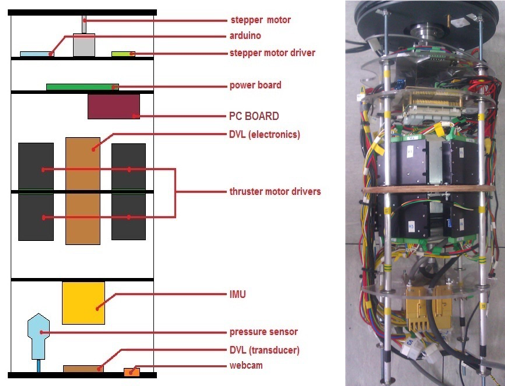
OUTSIDE THE TUBE
The biggest issue was ensuring the waterproofing of the tube, at its most vulnerable points – the connectors. The inside-outside connections were between the thrusters and their drivers. These connectors were custom made by putting motors’ large cables in the brass connector and sealing it off with a solidifying waterproof sealant.
However, this was the weak point which made the most problems, and is the cause why our team did not manage to prepare the AUV in time for the challenge.
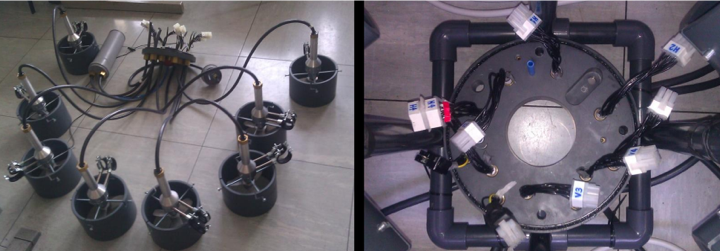
WIRING DIAGRAM
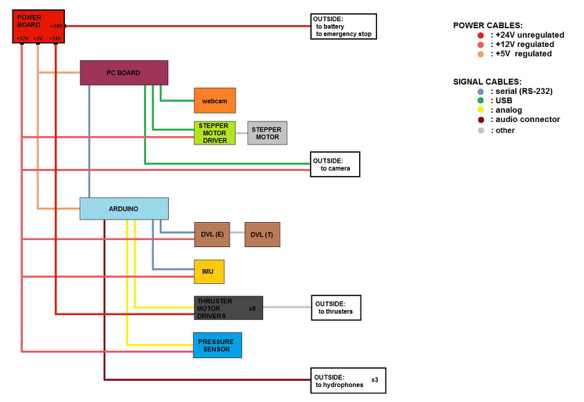
POWER BOARD
This is the power board that I designed and produced in order to provide specific voltage/current demands for each of the components it supplies.
Images with all connections attached and deployed in the tube are shown below:
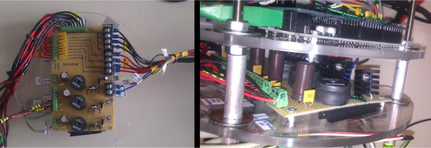
CONNECTORS
The largest connectors which used up most of the space were the ones connecting the thrusters with their drivers. In order for the lid to be detachable, we used MOLEX connectors for easier attachment/detachment.
The goal of the project was to build a multithreaded program in C. This simulates a mobile robot (“robber”) that is supposed to find a way through an unknown environment (binary maze), while avoiding hostile agents for a certain amount of time. There are 2 types of hostile agents - “policeman” and “ninja”. The former moves in a pseudo-random fashion through the map, while the latter is actively searching for the “robber”.
The algorithm is based on a potential field approach. The “robber” is repulsed by the hostile agents, and attracted to a specific position on the map. Conversely, the “ninja” is attracted by the “robber” and tries to catch it.
The project was done with 3 colleagues (Claudio Giovanni, Marsano Matilde and Vassallo Christian). My responsibility was the implementation of the above mentioned algorithm.
For this project, I was the team leader in a team of 5 people (Vasilije Anojčić, Stefan Vorkapić, Voislav Zec and Živko Crnojački). The goal was to create an autonomous mobile robot to participate in the EUROBOT 2011 championship.
My responsibilities were:
Work organisation and logistics
Electronics (power, sensors, main microcontroller and wiring communication)
Programming the main strategy algorithm
Obtaining sponsorships and parts
By the end of the project, we have produced a fully functioning, autonomous mobile robot, from scratch, which placed 6th (best in our generation) at the national qualifiers at which also senior teams and guest teams from abroad participated.
The line-following system developed created the basis for my BSc thesis.
PLAYGROUND
2 players
Figures
King
Queen
Pawn
Blue & red fields
MAIN CHALLENGES
Recognising chess elements
Avoiding fixed obstacles (table edges)
Avoiding the opponent robot
Line tracking
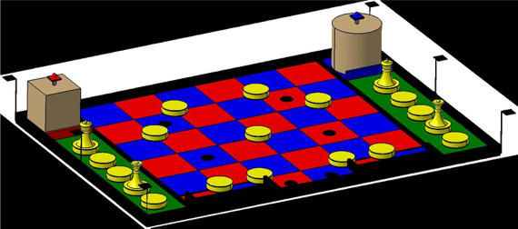
ACTUATORS
Front actuators for gripping the chess elements
Inner actuator for lifting the robot
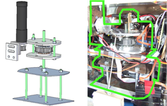
SENSORS
SHARP Infra-red distance sensors - used both for obstacle and opponent avoidance
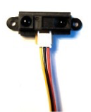
RGB colour sensor (HDJD-S822-QR999) -used for line following
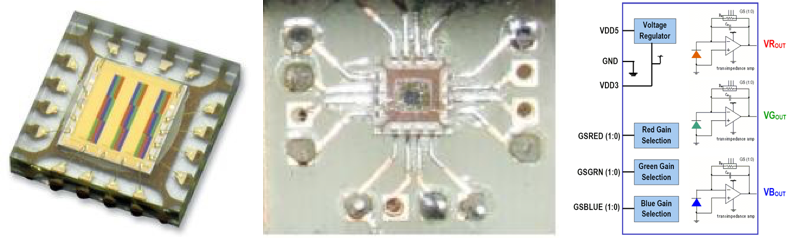
FINAL PRODUCT
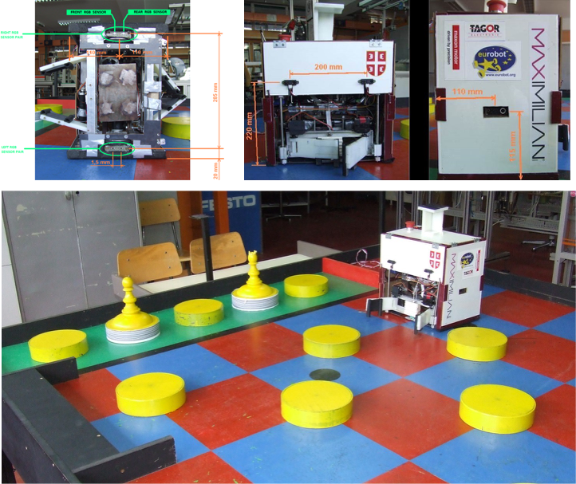
LINE FOLLOWING
The main concept behind the line following, is using the left and right RGB sensor couples to detect the edges. This can be exploited to compensate the encoder’s error accumulation due to slippage. The approach can be used for precise turning and correcting the motion by aligning the wheels on the edges.
Precise turning through alignment shown in 6 steps:
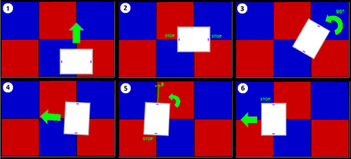
LINE FOLLOWING
Straight motion by aligning to perpendicular edges and disturbance correction
For my BSc internship project, I have worked on a small, 4 wheel rover, with a mounted arm with a gripper. I have written C code for serial communication and execution of the tele-operated commands for:
Operation of the 5 DOF robot arm with a gripping end-effector, in order to perform manipulation tasks.
Communication with the rover’s motor and light drivers in order to perform driving and signalling actions.
The code was later extended for WiFi communication and the robot was used for a demonstration at the 2010 Science Festival in Belgrade.